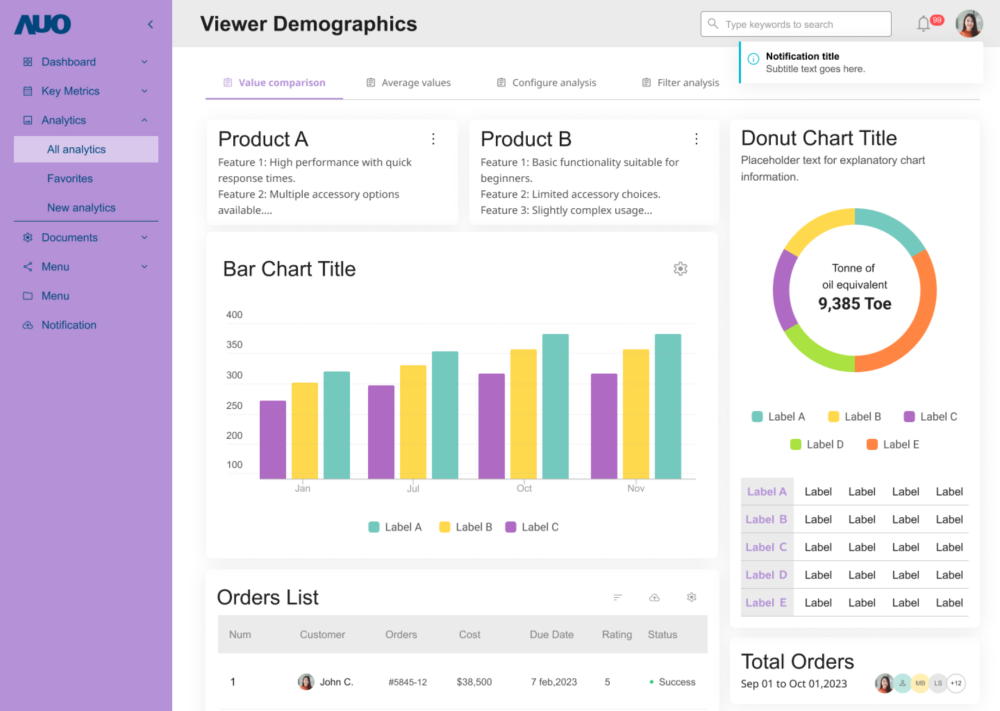

顏色是設計中不可或缺的要素，它能傳達情感、信息和品牌識別。AUO Design System 的色彩系統旨在提升使用者體驗、增強品牌識別，並確保介面一致性。
我們為您定義四種主題：友達藍、創新紫、活力黃、沈穩黑，以滿足不同產品的設計風格需求。
代表品牌的顏色，用於主要元素和互動元素，例如標誌、按鈕、連結、導航列等，用以建立視覺焦點和強化品牌識別。
用於補充主色的顏色，用以創造視覺層次和豐富介面，例如用於圖示、插圖、次要按鈕等。次要顏色應與主色搭配使用，並避免喧賓奪主。
用於擴展顏色調色板，為特定頁面或模組提供更多顏色選擇，例如用於特殊背景、局部 UI 的裝飾等，營造不同的視覺氛圍。輔助顏色可以與主色和次要顏色搭配使用，但應避免過度使用或跨頁面/模組重複使用，以免造成視覺混亂和降低品牌識別度。
主要用於背景、文字和分隔線等基礎元素，例如白色、黑色、灰色等。中性色旨在建立乾淨、簡潔的視覺風格，避免搶奪主要顏色和次要顏色的注意力，並提升整體介面的對比度和可讀性。
為了創造視覺層次和引導使用者注意力，我們建議在頁面背景或大面積區塊、以及低強調區域的元件底色上，使用較淺的中性色。這樣可以有效地突出主要焦點區域，確保使用者的視線聚焦在最需要關注或對他們最有用的區域。
用於數據可視化，例如圖表、數據圖等，用以區分不同的數據系列或類別，並使數據更易於理解和分析。共享色應該選擇與主色和次要顏色 有明顯區別的顏色，例如高彩度的顏色或特殊的顏色組合，並且在整個 Design System 中保持一致，以確保數據呈現的一致性和易讀性。
在 Design System 中具有特定含義的顏色，用於傳達系統狀態、資訊類型或使用者介面元件的狀態，例如成功、警告、錯誤等，而非作為純粹的裝飾用途。語意顏色應具有明確的含義，並在整個系統中保持一致，以確保使用者可以快速且準確地理解資訊。
AUO Design System 內建兩種模式：明亮模式和黑暗模式，提供您在進行設計時，可以根據產品的目標客群、使用情境等，選擇不同的視覺風格。
明亮模式使用白色作為全域背景，營造清爽、簡潔的視覺感受。在明亮模式下，您可以使用多種顏色來設計介面，我們以經典的友達藍作為主軸，以呼應 AUO 的品牌形象，另有創新紫、活力黃供選擇。
黑暗模式使用深灰色作為全域背景，營造沉穩、舒適的視覺感受。在黑暗模式下，建議使用深色系顏色，例如深灰、黑色等，並搭配適當的淺色來提升對比度。
AUO Design System 以原子設計 (Atom Design) 概念建構設計系統，我們使用 Design Token 與 Theme 來管理顏色，提供您在設計上更富有彈性的支持。
您可以輕鬆地使用 AUO Design System 自訂主題色，為您的產品塑造獨特的視覺風格，提升品牌識別。例如，您可以根據產品的特性或目標客群，選擇不同的顏色作為主題色，打造專屬的色彩計畫。
